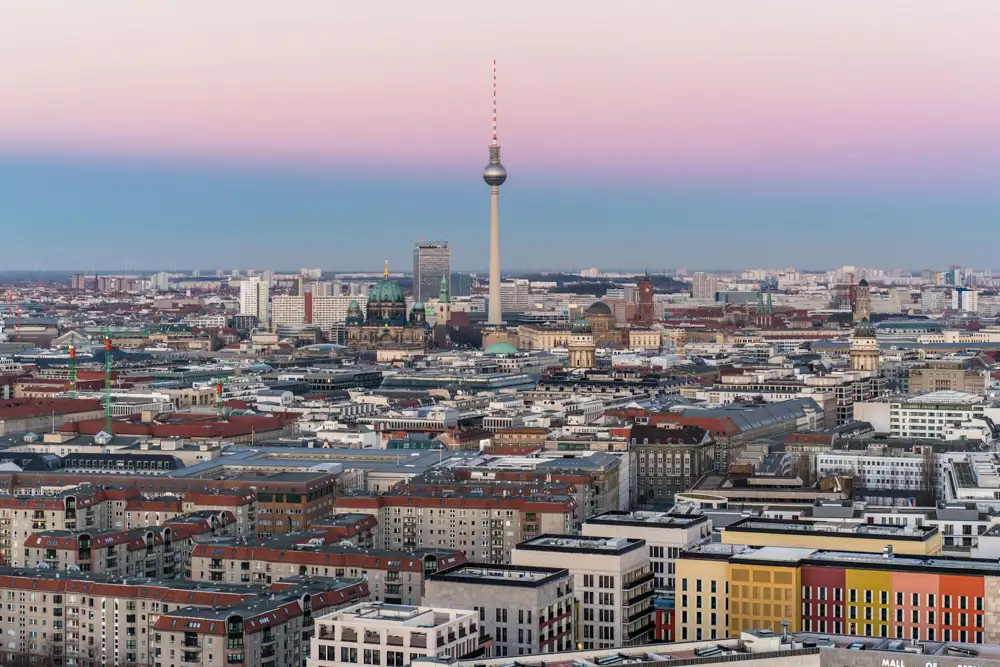
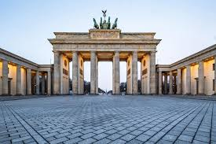
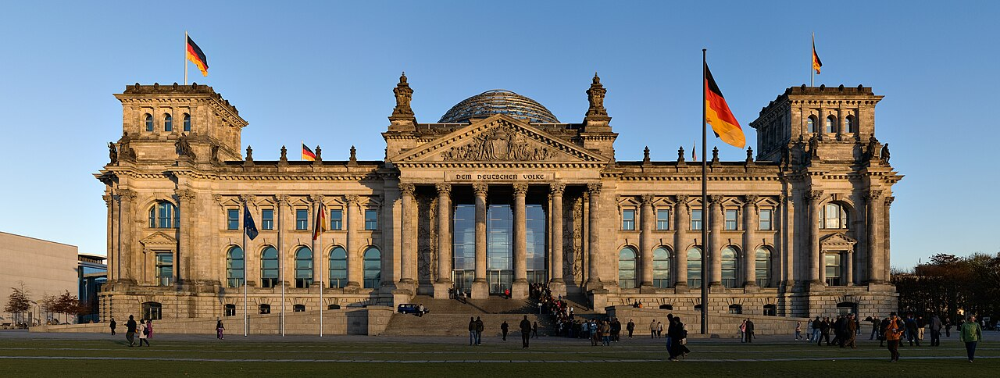
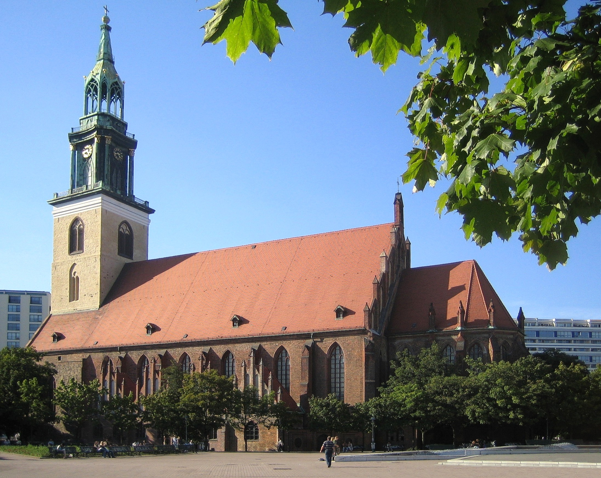

Stolica, największe miasto Niemiec i zarazem kraj związkowy. Zajmuje powierzchnię ok. 891,70 km² i zamieszkuje go 3 878 100 osób (31 grudnia 2023)[3]. Jest największym miastem w Unii Europejskiej pod względem liczby mieszkańców w granicach administracyjnych. Berlin jest podzielony na dwanaście okręgów administracyjnych (Bezirk). Przez przestrzeń miejską przepływają m.in. rzeki Sprewa i Hawela, a ponadto znajduje się wiele jezior i zatok, w tym największe Müggelsee.

Zabytkowa budowla w Berlinie, zaprojektowana przez śląskiego architekta Carla Gottharda Langhansa. Budowano ją w latach 1788–1791. Jest jednym z charakterystycznych punktów miasta. Budowana po wojnie siedmioletniej, w czasach umacniania się Królestwa Prus. W 1793 roku została wzbogacona kwadrygą, którą powoziła naga wówczas Wiktoria, bogini zwycięstwa uwieńczona dębowymi liśćmi. Pomalowana na biało budowla została wtedy nazwana Bramą Pokoju. Brama Brandenburska jako symbol Pokoju i Wolności od 3 października 1990, w rocznicę zjednoczenia Niemiec, jest znowu w swej oryginalnej formie. Remont tej historycznej budowli trwał dwa lata.

od 1999 roku siedziba Bundestagu w Berlinie. Od 1994 roku jest miejscem obrad Zgromadzenia Federalnego (niem. Bundesversammlung), które odbywa się co pięć lat w celu wyboru prezydenta Niemiec (niem. Bundespräsident). Gmach znajduje się w dzielnicy Tiergarten.Neorenesansowy budynek został zbudowany w latach 1884–1894 według projektu Paula Wallota. Do 1918 roku obradował w nim parlament II Rzeszy Niemieckiej. W latach 1919–1933 odbywały się tu posiedzenia parlamentu Republiki Weimarskiej. Gmach doznał poważnych uszkodzeń wskutek pożaru w 1933 r. oraz w wyniku działań wojennych. Został odbudowany w zmodernizowanej formie w latach 60. XX wieku przez Paula Baumgartena i przebudowany po zjednoczeniu Niemiec w latach 1991–1999 według projektu Normana Fostera.

Dla centrum Krakowa ograniczonego Plantami powszechnie używa się nazwy Stare Miasto. Jest to kolokwializm, nazwa nieformalna. Obszar ten nigdy tak się oficjalnie nie nazywał. Do roku 1954 Stare Miasto w obrębie Plant (bez wawelskiego wzgórza) stanowiło odrębną dzielnicę katastralną. Była to dzielnica I Śródmieście. W 1978 Stare Miasto wraz z Wawelem, Kazimierzem i Stradomiem zostało wpisane na listę światowego dziedzictwa UNESCO, w 1994 razem z Wawelem, Stradomiem, Kazimierzem, Podgórzem, Nowym Światem i Piaskiem zostało uznane za Pomnik historii. Głównymi zabytkami krakowskiego Starego Miasta są znajdujące się na Rynku Głównym oraz w jego okolicy: kościół Mariacki na Placu Mariackim, Sukiennice i wieża ratuszowa, oraz pozostałości murów obronnych – Brama Floriańska i Barbakan.